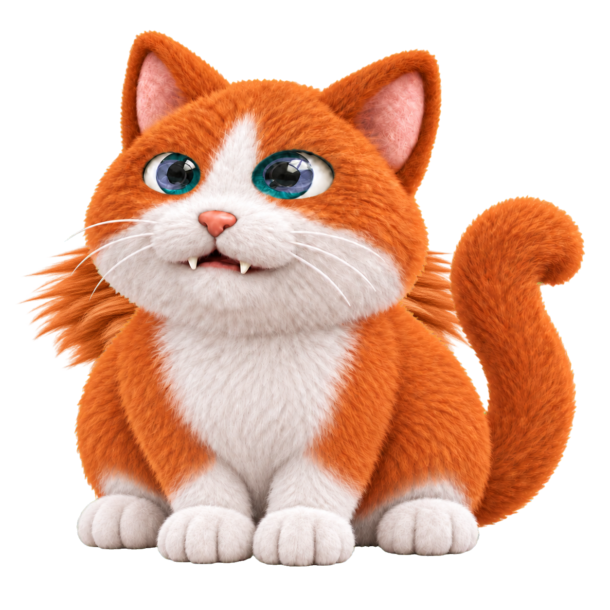
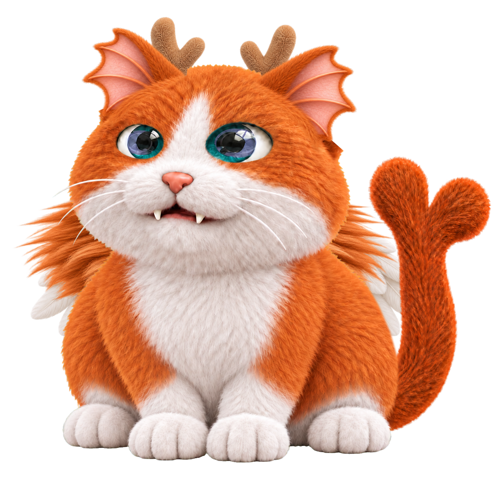

<!doctype html><html lang="zh-CN"><meta charset="utf-8"><meta name="viewport" content="width=device-width,initial-scale=1"><title>小狮鬃 · 修正前后</title><style>*{box-sizing:border-box}body{margin:0;background:#f4f1e9;color:#27352e;font:16px system-ui}header{padding:20px 30px;background:#fff}h1{margin:0 0 8px;font-size:26px}p{margin:8px 0;line-height:1.6}button,a{font:inherit;margin-right:16px}main{max-width:940px;margin:auto;padding:20px;display:grid;grid-template-columns:1fr 1fr;gap:16px}article{background:white;border-radius:10px;overflow:hidden}img{display:block;width:100%;background:#eee9df}body.dark img{background:#1c232b}b{display:block;padding:10px}</style><header><h1>小狮鬃 · 修正前后</h1><p>鬃毛覆盖肩胸，脸颊和下巴位于前方，翅膀位于后方；同步恢复鬃毛的纵向比例。</p><button onclick="document.body.classList.toggle('dark')">深／浅背景</button><a href="../index.html">返回 16 个样本</a></header><main><article><b>06 · 修正前</b></article><article><b>06 · 修正后</b></article><article><b>16 · 修正前</b></article><article><b>16 · 修正后</b></article></main></html>